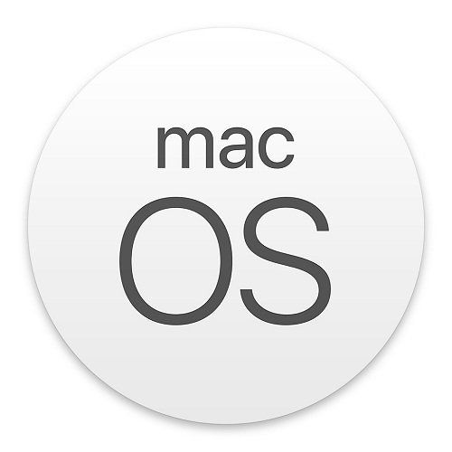
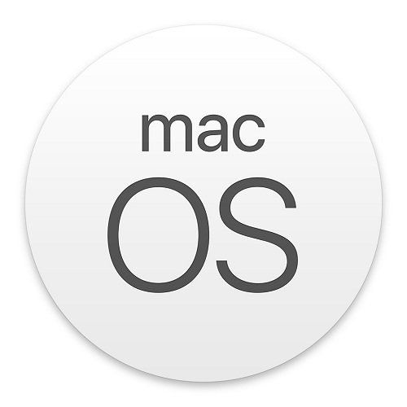
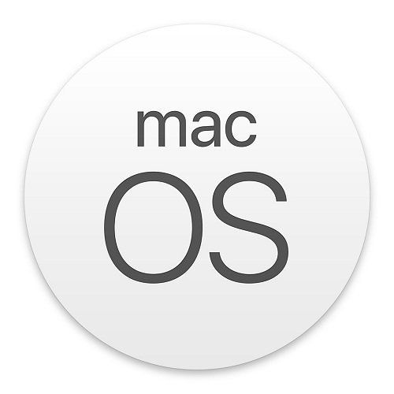

Драйверы организовывают работу с устройством.
Основное требование пользователя к компьютеру - многозадачность.
Операционная система (ОС) обеспечивает взаимодействие между выполняющимися программами, позволяя передавать им данные внутри компьютера. ОС также обеспечивает безопасное выполнение программ, кправляет аппаратными ресурсами, делит оперативную память.
Операционная система - система программ, в которую заложены алгоритмы управления всем, что происходит в компьютере
